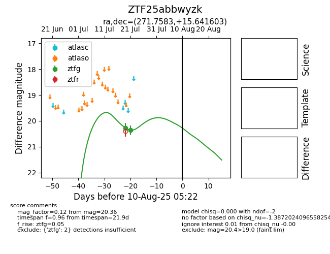

Target ZTF25abbwyzk at 2025-08-10 05:22, see:
FINK: fink-portal.org/ZTF25abbwyzk
Lasair: lasair-ztf.lsst.ac.uk/objects/ZTF25abbwyzk
ALeRCE: alerce.online/object/ZTF25abbwyzk
alt names
ZTF25abbwyzk (ztf,fink)
coordinates:
equatorial (ra, dec) = (271.7583,+15.64160)
galactic (l, b) = (42.2716,+16.73562)
photometry
last ztfg=20.36
2 ztfg detections
